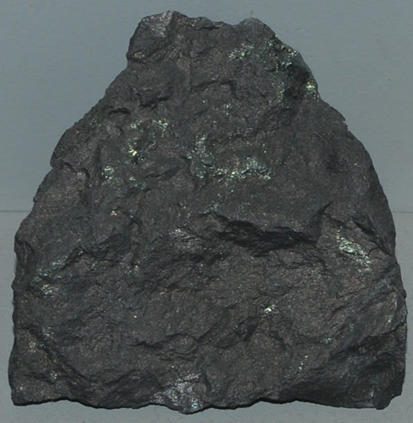

|

| Cu26Fe4Ge4S32
This sample of germanite is displayed in the Smithsonian Museum of Natural History. Germanite is a sulfide mineral of germanium, iron and copper with the composition Cu26Fe4Ge4S32. This sample is about 6x5 cm and is from Tsumeb, Namibia. This sample also contains tennantite.
|